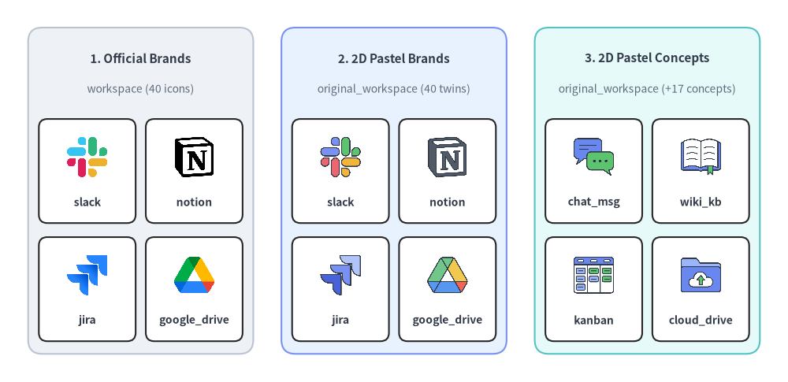
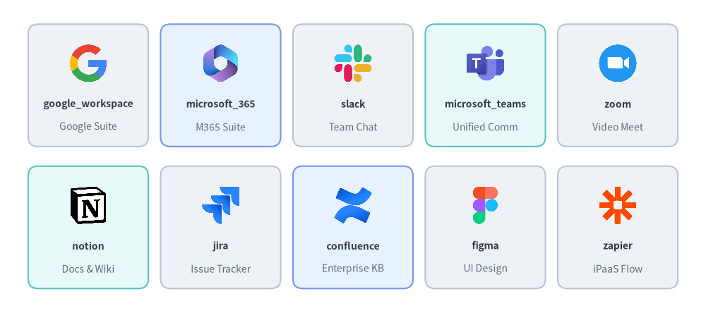
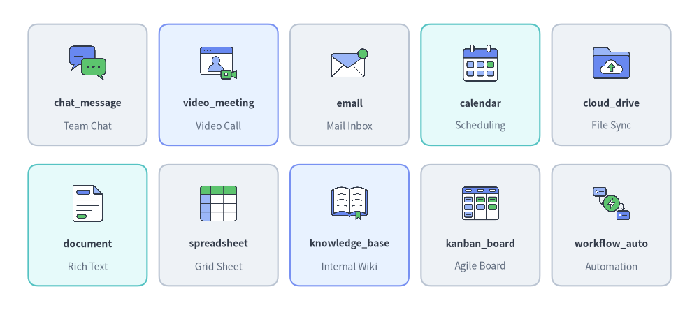
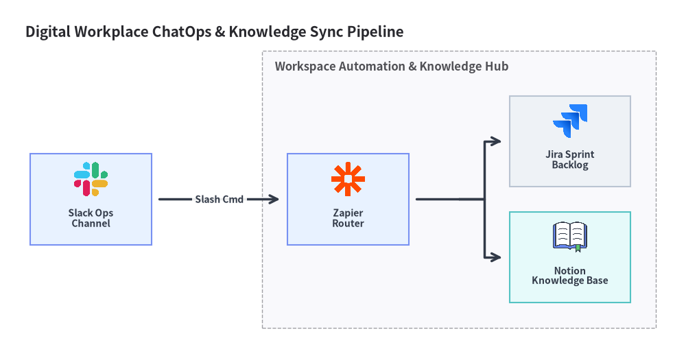

Workspace & Collaboration Icons (workspace & original_workspace)
Drawlib provides 40 official productivity, collaboration, and knowledge base brand icons in drawlib.icons.workspace (WorkspaceIcon) and 57 flat 2D pastel icons in drawlib.icons.original_workspace (OriginalWorkspaceIcon — all 40 brand twins plus 17 vendor-neutral collaboration and document concept icons). See the Icons Overview for cross-tier guidelines and Architecture Diagrams for connected enterprise workflow topologies.

Source Code
from drawlib.canvas import save, setup
from drawlib.icons import original_workspace, workspace
from drawlib.shapes import rectangle
from drawlib.styles import Styles
from drawlib.text import text
setup(width=140, height=68)
columns = [
(
25.0,
"1. Official Brands",
"workspace (40 icons)",
Styles.Neutral,
[
("slack", workspace.slack),
("notion", workspace.notion),
("jira", workspace.jira),
("google_drive", workspace.google_drive),
],
),
(
70.0,
"2. 2D Pastel Brands",
"original_workspace (40 twins)",
Styles.PrimaryNeutral,
[
("slack", original_workspace.slack),
("notion", original_workspace.notion),
("jira", original_workspace.jira),
("google_drive", original_workspace.google_drive),
],
),
(
115.0,
"3. 2D Pastel Concepts",
"original_workspace (+17 concepts)",
Styles.SecondaryNeutral,
[
("chat_msg", original_workspace.chat_message),
("wiki_kb", original_workspace.knowledge_base),
("kanban", original_workspace.kanban_board),
("cloud_drive", original_workspace.cloud_drive),
],
),
]
for cx, title, subtitle, card_style, items in columns:
rectangle((cx, 34.0), width=40.0, height=58.0, style=card_style.patch(shape_r=2.5))
text((cx, 57.5), title, style=Styles.DarkBold.patch(text_size=11.0))
text((cx, 52.0), subtitle, style=Styles.Muted.patch(text_size=10.0))
offsets = [(-9.5, 37.5), (9.5, 37.5), (-9.5, 16.5), (9.5, 16.5)]
sub_style = Styles.White.patch(shape_r=1.5, line_width=0.6)
for (dx, iy), (lbl, fn) in zip(offsets, items, strict=True):
ix = cx + dx
rectangle((ix, iy), width=17.2, height=18.5, style=sub_style)
fn((ix, iy + 2.5), width=8.0, style=Styles.Primary)
text((ix, iy - 5.5), lbl, style=Styles.DarkBold.patch(text_size=10.0))
save()
1. API Signature & Twin Module Structure
The workspace and original_workspace modules form a twin icon pair for digital workplace architectures, ChatOps automation, knowledge management, and BI reporting pipelines:
| Module | Diagram Enum | Canonical Count | Asset Archive | Visual Purpose |
|---|---|---|---|---|
drawlib.icons.workspace |
WorkspaceIcon |
40 | icon_workspace |
Official product logos for Google Workspace, Microsoft 365, Slack, Notion, Jira, Figma, and Tableau. |
drawlib.icons.original_workspace |
OriginalWorkspaceIcon |
57 (40 brand twins + 17 concepts) |
icon_original_workspace |
Cohesive flat 2D pastel equivalents of all 40 workspace brands plus 17 vendor-neutral collaboration concepts (chat_message, knowledge_base, kanban_board, workflow_automation, etc.). |
Every icon function is center-anchored at xy=(cx, cy) with a 1:1 square aspect ratio and accepts Style attributes (alpha, angle, image_tint_color, image_border_*):
from drawlib.diagrams.architecture import Node, OriginalWorkspaceIcon, WorkspaceIcon
from drawlib.icons import original_workspace, workspace
from drawlib.styles import Styles
# 1. Direct canvas rendering (center-anchored at (cx, cy))
workspace.slack((30, 25), width=9.0, style=Styles.Primary)
original_workspace.slack((60, 25), width=9.0, style=Styles.Primary)
original_workspace.knowledge_base((90, 25), width=9.0, style=Styles.Primary)
# 2. High-level ArchitectureDiagram nodes via Enum tokens
chat_node = Node("Slack Bot", width=26, height=18, icon=WorkspaceIcon.SLACK, icon_size=7.5)
wiki_node = Node("Team Wiki", width=26, height=18, icon=OriginalWorkspaceIcon.KNOWLEDGE_BASE, icon_size=7.5)
2. Official & Pastel Brand Icons Showcase & Complete Reference (workspace & original_workspace)
All 40 canonical brand names below are available identically in both drawlib.icons.workspace.<name> (WorkspaceIcon.<NAME>) and drawlib.icons.original_workspace.<name> (OriginalWorkspaceIcon.<NAME>).

Source Code
from drawlib.canvas import save, setup
from drawlib.icons import workspace
from drawlib.shapes import rectangle
from drawlib.styles import Styles
from drawlib.text import text
setup(width=144, height=64)
row1 = [
("google_workspace", "Google Suite", workspace.google_workspace, Styles.Neutral),
("microsoft_365", "M365 Suite", workspace.microsoft_365, Styles.PrimaryNeutral),
("slack", "Team Chat", workspace.slack, Styles.Neutral),
("microsoft_teams", "Unified Comm", workspace.microsoft_teams, Styles.SecondaryNeutral),
("zoom", "Video Meet", workspace.zoom, Styles.Neutral),
]
row2 = [
("notion", "Docs & Wiki", workspace.notion, Styles.SecondaryNeutral),
("jira", "Issue Tracker", workspace.jira, Styles.Neutral),
("confluence", "Enterprise KB", workspace.confluence, Styles.PrimaryNeutral),
("figma", "UI Design", workspace.figma, Styles.Neutral),
("zapier", "iPaaS Flow", workspace.zapier, Styles.Neutral),
]
for row_idx, items in enumerate([row1, row2]):
cy = 46.5 if row_idx == 0 else 17.5
for col_idx, (name, cat, icon_fn, card_st) in enumerate(items):
cx = 18.0 + col_idx * 27.0
rectangle((cx, cy), width=24.5, height=25.0, style=card_st.patch(shape_r=2))
icon_fn((cx, cy + 4.5), width=8.5, style=Styles.Primary)
text((cx, cy - 3.8), name, style=Styles.DarkBold.patch(text_size=10.0))
text((cx, cy - 8.5), cat, style=Styles.Muted.patch(text_size=10.0))
save()
Complete 40 Brand Icons Reference (workspace & original_workspace)
| Category | Count | Canonical Function (workspace.* & original_workspace.*) |
Enum Member (WorkspaceIcon.* & OriginalWorkspaceIcon.*) |
|---|---|---|---|
| Google Workspace Suite | 10 | gmail, google_calendar, google_chat, google_docs, google_drive, google_forms, google_meet, google_sheets, google_slides, google_workspace |
GMAIL, GOOGLE_CALENDAR, GOOGLE_CHAT, GOOGLE_DOCS, GOOGLE_DRIVE, GOOGLE_FORMS, GOOGLE_MEET, GOOGLE_SHEETS, GOOGLE_SLIDES, GOOGLE_WORKSPACE |
| Microsoft 365 Productivity Suite | 8 | excel, microsoft_365, microsoft_teams, onedrive, outlook, powerpoint, sharepoint, word |
EXCEL, MICROSOFT_365, MICROSOFT_TEAMS, ONEDRIVE, OUTLOOK, POWERPOINT, SHAREPOINT, WORD |
| Team Messaging & Video Conferencing | 4 | discord, slack, webex, zoom |
DISCORD, SLACK, WEBEX, ZOOM |
| Project Management, Issue Tracking & Wiki | 7 | asana, confluence, jira, linear, monday, notion, trello |
ASANA, CONFLUENCE, JIRA, LINEAR, MONDAY, NOTION, TRELLO |
| Cloud Storage, PDF & Collaborative Design | 6 | adobe_acrobat, box, canva, dropbox, figma, miro |
ADOBE_ACROBAT, BOX, CANVA, DROPBOX, FIGMA, MIRO |
| No-Code Databases, BI & Workflow Automation | 5 | airtable, power_automate, power_bi, tableau, zapier |
AIRTABLE, POWER_AUTOMATE, POWER_BI, TABLEAU, ZAPIER |
3. Vendor-Neutral Concept Icons Showcase & Complete Reference (original_workspace)
In addition to the 40 brand twins above, drawlib.icons.original_workspace (OriginalWorkspaceIcon) provides 17 vendor-neutral collaboration and productivity concept icons for generic document pipelines, internal knowledge bases, and ChatOps workflows.

Source Code
from drawlib.canvas import save, setup
from drawlib.icons import original_workspace
from drawlib.shapes import rectangle
from drawlib.styles import Styles
from drawlib.text import text
setup(width=144, height=64)
row1 = [
("chat_message", "Team Chat", original_workspace.chat_message, Styles.Neutral),
("video_meeting", "Video Call", original_workspace.video_meeting, Styles.PrimaryNeutral),
("email", "Mail Inbox", original_workspace.email, Styles.Neutral),
("calendar", "Scheduling", original_workspace.calendar, Styles.SecondaryNeutral),
("cloud_drive", "File Sync", original_workspace.cloud_drive, Styles.Neutral),
]
row2 = [
("document", "Rich Text", original_workspace.document, Styles.SecondaryNeutral),
("spreadsheet", "Grid Sheet", original_workspace.spreadsheet, Styles.Neutral),
("knowledge_base", "Internal Wiki", original_workspace.knowledge_base, Styles.PrimaryNeutral),
("kanban_board", "Agile Board", original_workspace.kanban_board, Styles.Neutral),
("workflow_auto", "Automation", original_workspace.workflow_automation, Styles.Neutral),
]
for row_idx, items in enumerate([row1, row2]):
cy = 46.5 if row_idx == 0 else 17.5
for col_idx, (name, cat, icon_fn, card_st) in enumerate(items):
cx = 18.0 + col_idx * 27.0
rectangle((cx, cy), width=24.5, height=25.0, style=card_st.patch(shape_r=2))
icon_fn((cx, cy + 4.5), width=8.5, style=Styles.Primary)
text((cx, cy - 3.8), name, style=Styles.DarkBold.patch(text_size=10.0))
text((cx, cy - 8.5), cat, style=Styles.Muted.patch(text_size=10.0))
save()
Complete 17 Vendor-Neutral Concept Icons (original_workspace)
Canonical Function (original_workspace.*) |
Enum Member (OriginalWorkspaceIcon.*) |
Collaboration Category | Typical Architectural Role |
|---|---|---|---|
announcement |
ANNOUNCEMENT |
Communications | Company-wide broadcast, release bulletin, or incident status banner |
calendar |
CALENDAR |
Scheduling | Shared team calendar, on-call rotation schedule, or booking service |
chat_message |
CHAT_MESSAGE |
Real-Time Messaging | Instant messaging channel, ChatOps webhook, or bot notification |
cloud_drive |
CLOUD_DRIVE |
File Storage | Enterprise file sync and share (EFSS) repository |
document |
DOCUMENT |
Office Documents | Collaborative word processing document or technical specification |
email |
EMAIL |
Communications | Corporate email inbox, SMTP relay target, or digest notification |
form_survey |
FORM_SURVEY |
Data Collection | User feedback form, intake questionnaire, or survey portal |
kanban_board |
KANBAN_BOARD |
Project Tracking | Sprint backlog, issue triage board, or task tracking workflow |
knowledge_base |
KNOWLEDGE_BASE |
Documentation | Internal engineering wiki, runbook portal, or RAG document corpus |
pdf_document |
PDF_DOCUMENT |
Office Documents | Portable Document Format (PDF) report, signed contract, or export artifact |
presentation |
PRESENTATION |
Office Documents | Slide deck, executive briefing, or architecture review presentation |
project_plan |
PROJECT_PLAN |
Project Tracking | Roadmap timeline, milestone plan, or delivery schedule |
spreadsheet |
SPREADSHEET |
Office Documents | Tabular financial model, CSV export, or operational data sheet |
video_meeting |
VIDEO_MEETING |
Conferencing | Multiparty video conference bridge, webinar, or virtual war room |
voice_call |
VOICE_CALL |
Conferencing | VoIP audio call, SIP softphone, or conference bridge |
whiteboard |
WHITEBOARD |
Visual Collaboration | Infinite canvas for architecture brainstorming and retrospective workshops |
workflow_automation |
WORKFLOW_AUTOMATION |
No-Code / iPaaS | Event-driven webhook trigger, low-code connector, or workspace automation |
4. Practical Architecture Diagram (ArchitectureDiagram)
The following example combines WorkspaceIcon and OriginalWorkspaceIcon inside ArchitectureDiagram to model an Automated ChatOps Incident Triage & Knowledge Base Sync Pipeline:
from drawlib.canvas import clear, save, setup
from drawlib.diagrams.architecture import (
ArchitectureDiagram,
Node,
NodeGroup,
OriginalWorkspaceIcon,
WorkspaceIcon,
)
from drawlib.styles import Styles
clear()
setup(width=136, height=68)
d = ArchitectureDiagram(
node_style=Styles.Primary,
node_text_style=Styles.DarkBold.patch(text_size=10.0),
edge_style=Styles.DarkBold,
edge_text_style=Styles.DarkBold.patch(text_size=10.0),
node_card_style=Styles.Neutral,
title="Digital Workplace ChatOps & Knowledge Sync Pipeline",
)
slack_ch = d.add(
Node(
"Slack Ops\nChannel",
width=24,
height=18,
icon=WorkspaceIcon.SLACK,
icon_size=7.5,
card_style=Styles.PrimaryNeutral,
),
xy=(14.0, 24.5),
)
hub = d.add(
NodeGroup(title="Workspace Automation & Knowledge Hub", padding=5.0),
xy=(48.0, 4.0),
)
zapier_flow = hub.add(
Node(
"Zapier\nRouter",
width=24,
height=18,
icon=WorkspaceIcon.ZAPIER,
icon_size=7.5,
card_style=Styles.PrimaryNeutral,
),
xy=(17.0, 20.5),
)
jira_board = hub.add(
Node(
"Jira Sprint\nBacklog",
width=24,
height=18,
icon=WorkspaceIcon.JIRA,
icon_size=7.5,
),
xy=(61.0, 32.0),
)
notion_kb = hub.add(
Node(
"Notion\nKnowledge Base",
width=24,
height=18,
icon=OriginalWorkspaceIcon.KNOWLEDGE_BASE,
icon_size=7.5,
card_style=Styles.SecondaryNeutral,
),
xy=(61.0, 9.0),
)
d.connect(slack_ch, zapier_flow, label="Slash Cmd", padding=1.5)
zapier_flow.fork([jira_board, notion_kb], at_x=87.0, padding=1.5)
d.draw(xy=(4.0, 4.0))
save()
